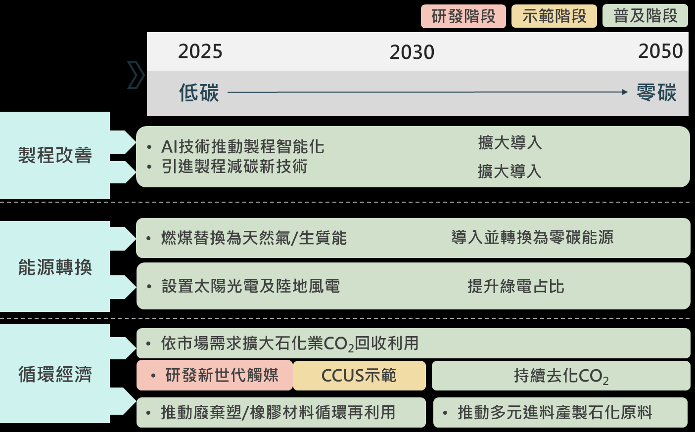
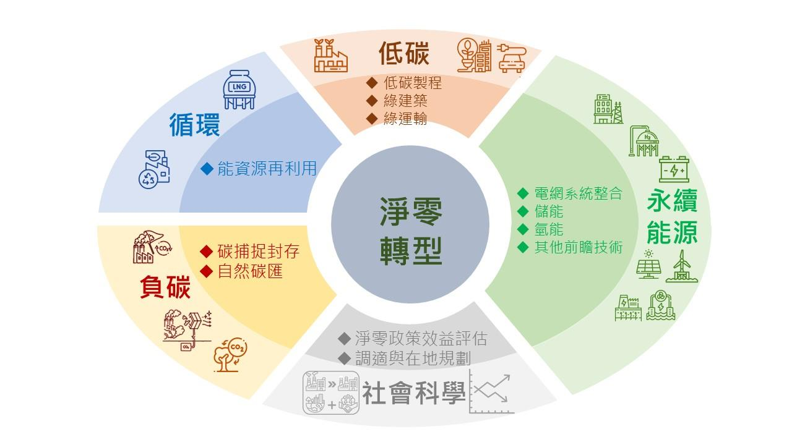
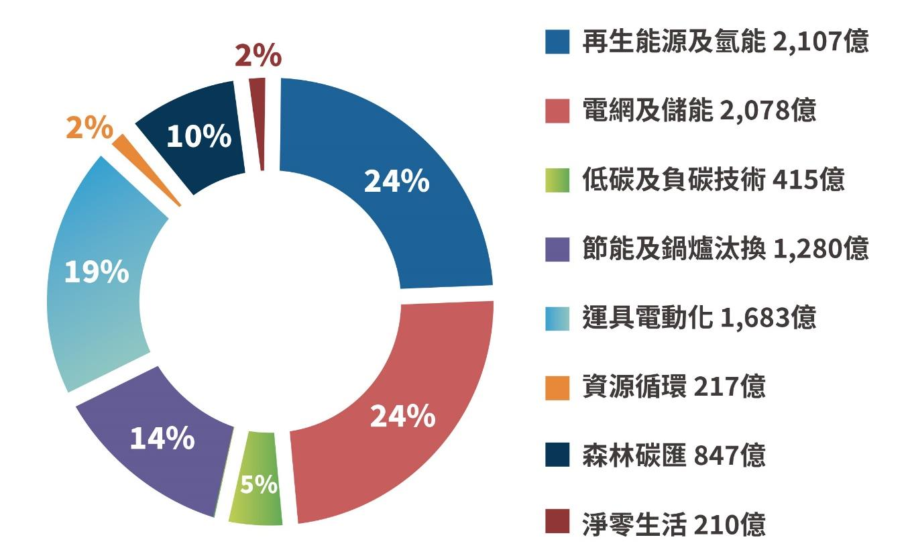

臺灣 2050 淨零排放
路徑及策略總說明
國家發展委員會 行政院環境保護署
經濟部 科技部 交通部 內政部
行政院農業委員會、金融監督管理委員會
2022 年 3 月 30 日
目錄
Ⅰ、總論 .............................................................................. 1
Ⅱ、能源及產業轉型篇：
零碳能源供給與綠色成長商機 ............................ 13
Ⅲ、未來生活篇：從推動淨零生活開始 ................... 45
Ⅳ、社會支持體系篇：落實公正轉型及公民參與 .. 50
Ⅴ、科研基礎篇：研發淨零科技 ................................. 54
Ⅵ、法制基礎篇：完善基礎環境 ................................. 62
Ⅶ、淨零轉型之十二項關鍵戰略 ................................. 70
附錄、轉型過程中的外界關切議題 ................................ 77
Ⅰ、總論
科學證實氣候變遷造成的負面影響已經十分緊急，引起了國
際社會、跨國企業及在地團體的重視，各國陸續提出「2050 淨零
排放」的宣示與行動。臺灣的溫室氣體排放已逐步控制而緩步下
降，2019 年溫室氣體淨排放量為 265.62 百萬公噸二氧化碳當量，
已降至 2005 年基準年水準以下；碳排放密集度（即每單位 GDP 之
二氧化碳排放）更較基準年減少約 34%，顯示溫室氣體排放已與
經濟成長脫鉤。為共同承擔全球目標，我國亦將 2050 淨零排放入
法引領未來中長期因應衝擊之氣候行動。
臺灣面臨 2050 淨零排放跨世代、跨領域、跨國際之轉型工程，
政府將建構科技研發及氣候法制等兩大面向之基礎環境，推動能
源、產業、生活、社會等四大轉型策略，逐步實現 2050 淨零排放
之永續社會。針對推動 2050 淨零轉型，政府將提出「十二項關鍵
戰略」
，後續提出個別戰略計畫，以落實淨零轉型之長期願景目標。
壹、 推動 2050 達到淨零排放的意義及重要性
一、 全球淨零趨勢及供應鏈減碳壓力，產業轉型刻不容緩
多數國家已設定淨零排放目標以呼應全球淨零趨勢，歐盟更
提 出 「 碳 邊 境 調 整 機 制 (Carbon Border Adjustment
Mechanism, CBAM)」要求進口產品依碳含量繳交 CBAM 憑
證，以加速各國減碳進程。此外，國際大廠亦紛紛加入 RE100
倡議，宣示企業淨零排放目標期程，並要求旗下供應鏈廠商
配合使用綠電與加強減碳。我國為出口導向經濟體，未來勢
必面對國際碳管制加嚴的挑戰，須提前布局淨零轉型，以符
1
合國際貿易的減碳趨勢，持續拓銷出口、掌握訂單。
此外，各國淨零轉型規劃除致力減碳，亦將淨零視為國家未
來經濟的新成長動能，如：英國將淨零轉型視為「綠色工業
革命」
，以及日本訂定「2050 碳中和綠色成長戰略」等。國際
能源總署(International Energy Agency, IEA) 2021 年提出「全
球能源部門 2050 淨零排放路徑」報告指出，至 2030 年減碳
貢獻主要是來自目前市場上已有的技術，但至 2050 年，將近
一半的減量是來自目前仍僅在示範或原型階段的技術。換言
之，要達到 2050 淨零排放，對每個國家都是嚴峻的挑戰，所
需創新科技多數仍在研發中，這正是臺灣的機會與優勢所在。
我國製造業實力堅強，半導體及資通訊產業具有全球優勢，
且有健全的科技及傳產供應鏈，我國應可參考國際減碳路徑，
找出臺灣具有基礎或潛力的新興科技，透過加強研發，引導
產業綠色轉型，帶動新一波經濟成長的動能。
二、 極端氣候災難頻傳，突顯達成淨零目標的急迫性
聯合國政府間氣候變化專門委員會(Intergovernmental Panel
on Climate Change, IPCC) 2022 年 2 月公布第六次評估報告
(IPCC AR6)指出，全球暖化將在近 20 年內升溫至攝氏 1.5 度，
多種氣候危害的增加，如極端氣候災難、熱浪、生物多樣性
喪失等，全球皆無法倖免。這些危害衝擊到了能源、水資源
與糧食安全，並造成許多居住地與生物棲地的喪失。
聯合國氣候大會亦呼籲應採取更為急迫之氣候行動，將全球
溫室氣體排放量在 2030 年前減半，並在 2050 年達到淨零，
方可將全球溫升控制在 1.5°C 以內，以因應全球氣候緊急之
高風險衝擊。
2
三、 臺灣與世界共同邁向淨零
2021 年 4 月 22 日世界地球日蔡總統宣示，2050 淨零轉型是
全世界的目標，也是臺灣的目標；要達到 2050 年淨零轉型，
前提是必須堅定落實能源轉型的目標，及早評估風險，並且
以前瞻且務實可行的方式，提出淨零排放的路徑圖，讓整體
經濟結構的轉型有所依循。
2050 淨零排放是一項跨世代、跨領域、跨國際之大型轉型工
程，而氣候變遷對年輕世代的影響更為直接且長遠。為順應
淨零排放趨勢及巴黎協定(Paris Agreement)所揭櫫之環境、社
會、經濟等全面向結構轉型因應之道，在我們這個世代追求
當下的富足時，應並行思考維護未來世代的生存權益，藉由
促進國際合作，掌握淨零科技研發應用，擴大公眾對話社會
溝通，滾動檢討淨零路徑以符合未來發展需求，並重視永續
發展的跨世代正義及跨領域治理思維，共同營造面對衝擊全
球一體的韌性，化氣候風險為綠色轉型契機。
3
圖 1、臺灣淨零轉型目標願景
預計台灣推動淨零轉型將可達到四個目標：
1. 能源轉型更安全
藉由擴大再生能源設置，提升自產能源占比，可翻轉高進
口能源依賴風險，使進口能源依存度由 2021 年 97.4%，降
至 2050 年 50%以下，降低國際能源市場衝擊與價格波動
對我國能源安全影響。
2. 產業轉型更具競爭力
(1) 持續推動綠能布建提供足夠綠電外，同步帶動綠能產業鏈
及本土供應鏈成長。
(2) 推動產業滿足供應鏈與全球綠色倡議要求，並結合 ICT 產
業優勢，提供更高效、更低碳、更智慧的製程。
(3) 進行前瞻技術布局，並發展本土優勢技術加速商業化，瞄
準全球淨零轉型商機。
4
3. 生活轉型更永續
透過全民對話，包含以製造業為主的產業端，與以年輕世
代為主的社會大眾溝通對話，提升全民對氣候變遷及淨零
轉型之認知與共識，進而引發全民行為改變，從食、衣、
住、行各面向著手，改變生活型態、落實低碳生活；同時
誘發廠商建構低碳商業模式，創造綠生活產業鏈。
4. 社會轉型更具韌性
透過社會溝通，鑑別淨零路徑可能帶來的衝擊，以及能源、
產業、生活、科研和法制各項減碳方案可能的矛盾或是衝
突點。再者，全面綜合地考量所有減碳方案之間的相關與
連動性，分析各方案輕重緩急的優先順序，再制定跨域的
推動計畫和配套因應措施，確保符合社會公正。
此項轉型也將促進經濟成長，帶動民間投資，並創造更多綠
色就業機會。
5
貳、 淨零路徑之推動情境
一、 我國溫室氣體排放現況
我國 2019 年溫室氣體排放總量為 287.06 百萬公噸二氧化碳
當量(MtCO2e)，經扣除碳匯（21.44 MtCO2e）後之淨排放量為
265.62 MtCO2e，較基準年（2005 年）約減少 1.1%。各類溫
室氣體排放以二氧化碳(CO2) 95.28%為最大宗（主要來自能
源燃燒排放），其次依序為氧化亞氮(N2O) 1.71%、甲烷(CH4)
1.67%、全氟碳化物(PFCs) 0.49%、氫氟碳化物(HFCs) 0.36%、
六氟化硫(SF6) 0.33%、三氟化氮(NF3) 0.16%。以部門別區分，
我國製造部門（147.46 MtCO2e）約占排放總量的 51.4%為最
多，其次依序為住商部門 19.38%（55.34 MtCO2e）、能源(自
用)部門 13.20%（37.88 MtCO2e）、運輸部門 12.89%（36.99
MtCO2e）
、農業部門 2.22%（6.37 MtCO2e）及環境部門 0.94%
（2.70 MtCO2e）。
二、 整體能源消費隨效率提升與減碳措施而成長趨緩，其中電力
消費受煤、油等化石能源消費轉向用電及經濟持續發展等影
響，呈成長趨勢：長期電力消費年均成長 2%±0.5%、非電力
消費則呈負成長。
(一) 依據國際能源總署(IEA)與美國、歐盟、韓國等主要國家淨
零路徑預估，未來能源消費成長將因效率提升而逐步趨緩，
惟為達淨零，各部門原化石能源消費多轉向用電（如：燃
油車改為電動車）之結構性轉變影響，各國電力消費預期
呈一定成長幅度趨勢（韓國推估年均成長 2.5%~2.6%）。
6

(二) 淨零情境下，預估 2021~2050 年電力消費趨勢與國際趨勢
一致，因整體經濟成長與產業發展、民生與產業製程設備
智慧化，以及電動運具發展等部門能源使用電氣化等因素，
電力消費年均成長 2.0±0.5%（2050 年最高約達 5,731 億度
電）；惟因石油產品、天然氣與煤炭等非電力消費呈負成
長，使我國整體能源消費（電力+非電力）成長幅度逐步趨
緩，呈微幅成長趨勢。
圖 2、電力需求情境分析
7
三、 未來整體淨零轉型規劃
參考國際能源總署(IEA)、美國、歐盟、韓國等淨零排放能源
路徑進行規劃，預計分為兩階段：
(一) 短期（~ 2030）達成低碳
執行目前可行減碳措施，致力減少能源使用與非能源使用
碳排放。
能源系統：透過能源轉型，增加綠能，優先推動已成熟的
風電和光電，並布局地熱與海洋能技術研發；增加天然氣
以減少燃煤的使用。
(二) 長期（~ 2050）朝零碳發展
布局長期淨零規劃，使發展中的淨零技術可如期到位，並
調整能源、產業結構與社會生活型態。
能源系統：極大化布建再生能源，並透過燃氣機組搭配碳
捕捉再利用及封存(Carbon Capture, Utilization and Storage,
CCUS)以及導入氫能發電，來建構零碳電力系統。燃煤則
基於戰略安全考量轉為備用。
極大化各產業部門及民生用具之電氣化：減少非電力之碳
排放，集中改善電力部門零碳能源占比。
積極投入各種技術開發：包括高效率的風電及光電發電技
術、碳捕捉再利用及封存(CCUS)、氫能發電及運用之技術。
藉由上述兩個階段之工作，臺灣規劃 2050 淨零排放初步藍圖
（如圖 3），總電力占比 60~70%之再生能源，並搭 9~12%之
氫能，加上顧及能源安全下使用搭配碳捕 捉之火力發電
20~27%，以達成整體電力供應的去碳化。在非電力能源去碳
8
化方面，除加速電氣化進程外，亦將投入創新潔淨能源之開
發，如氫能與生質能以取代化石燃料，並搭配碳捕捉再利用
及封存技術。而在其他難以削減之溫室氣體排放方面（如：
科技產業製程含氟氣體排放、農業畜牧生產及廢棄物廢水處
理衍生之甲烷、氧化亞氮排放等）
，將積極規劃山林溼地保育
以提升國土碳匯量能。
根據此規劃藍圖，臺灣提出 2050 淨零排放路徑里程碑（如圖
4）自短期不興建新燃煤電廠開始、陸續擴增再生能源裝置容
量、達成 100%智慧電網布建、燃煤/燃氣電廠依 CCUS 發展
進程導入運用、最終布建超過 60%發電占比之再生能源；此
外，亦須搭配產業住商運輸等需求端之各階段管理措施，藉
以達成 2050 淨零排放之長期目標。
9
圖 3、臺灣 2050 淨零轉型路徑規劃
10
圖 4、臺灣淨零轉型路徑規劃之階段里程碑
11
參、 臺灣淨零排放之策略與基礎
為達到淨零排放目標，臺灣擬採四大策略、兩大基礎來推動轉
型，並依此架構分為五篇，來陳述推動的策略及作法。
「能源及產業轉型篇」
：針對工商團體對於推動淨零排放所可
能有的疑慮，說明整體轉型過程以及策略，以及政府如何協
助企業進行淨零轉型。
「未來生活篇」
：則從食衣住行著手，希望透過民眾行為的改
變，減少碳排。
「社會支持篇」
：則論述整體社會在面對此巨大議題時，將要
如何顧及各方角度，以及取得社會共識
「科研基礎篇」及「法制基礎篇」：說明在推動上述四種轉型
策略時，共同需要的基礎環境應該如何建置。
圖 5、臺灣淨零轉型之策略與基礎
12
Ⅱ、能源及產業轉型篇
零碳能源供給與綠色成長商機
壹、 能源部門
一、 能源轉型必要性
(一) 各部門能源使用為國家溫室氣體排放主要來源
各部門需透過提升能源效率及結構轉型，逐步降低能源需
求成長幅度，並推動電氣化與燃料轉換；能源部門則需增
加零碳能源（如：再生能源、氫能等）供給，逐步降低對化
石能源依賴，以促使能源與電力供給結構轉向低碳無碳化。
(二) 能源部門責任為提供各部門無碳電力與燃料
1. 電力排放部分，須由能源部門推動電力無碳化：以提供各
部門無碳電力。
2. 非電力排放部分，須由各部門推動燃料轉換：主動選用無
碳燃料，並由能源部門配合建構無碳燃料供應系統。
(三) 能源部門淨零轉型須納入國家安全戰略思維
我國屬獨立電網系統，電力短缺或系統失衡時無法依賴其
他國家進行備援，且面臨地緣政治與特殊國際政治處境，
能源安全課題較其他國家更為重要，因此，能源部門淨零
轉型須納入國家安全戰略思維，以確保能源穩定供應。
13
二、 能源轉型路徑
(一) 打造零碳能源系統
1. 最大化再生能源
(1) 短中期（~ 2030 年）
：優先建置技術已成熟的太陽光電、
風力發電，致力達成太陽光電 2025 年累計設置 20GW
與 2026-2030 年每年 2GW，以及離岸風電 2025 年累計
設置 5.6GW 與 2026-2030 年每年 1.5GW 目標。
(2) 長期（2030 年後）
：則極大化布建裝置容量，太陽光電
將設置更高效率的矽堆疊模組，2050 年設置裝置量達
40~80GW；離岸風電則朝浮動式、大型化機組、擴大設
置場域，規劃 2050 年設置裝置量達 40~55GW；另提供
誘因扶植具本土化優勢前瞻能源，由淺層逐漸往深層發
展非傳統地熱發電，並導入波浪、海流發電等海洋能技
術，另擴大生質能使用，規劃 2050 年前瞻能源設置裝置
量達 8~14GW。
圖 6、能源轉型策略與措施
14
2. 燃氣發電朝低碳、無碳化
短期推動以氣換煤，提高天然氣使用以降低燃煤占比，並
導入氫能混燒，於興達燃氣機組進行示範；長期燃氣機組
則將搭配 CCUS 或進口碳中和天然氣減少排放，並持續提
高氫能混燒比例與發展氫能專燒機組。
3. 燃煤發電逐步去煤、去碳
燃煤機組短期混燒氨降低碳排，於林口超超臨界燃煤機組
進行混燒示範，長期將擴大導入與提高混燒率或搭配 CCUS
技術減少排放，並視低碳能源供給增加，基於國家安全戰
略考量，將未屆齡燃煤機組轉為備用。
4. 建構無碳燃料供應體系
為提供產業與民生所需無碳燃料，建置國內外生質能料源
供應鏈、集運系統，輔導廠商投入建構集中處理系統，推動
設置專區應用。
5. 適時導入先進技術增加零碳能源運用空間
掌握全球前瞻去碳能源技術動向，評估國內條件及需要，
針對不具發展競爭優勢技術，透過國際合作引進，以增加
中長期零碳能源（電力）供給量能及系統調度裕度。
(二) 建構配套環境
1. 提升能源系統韌性，以確保供電穩定
(1) 優先擴充再生能源電網基礎設施：因應未來再生能源占
比提高，擴大再生能源饋線網路建置，進行高壓直流電
網布建可行性研究、強化電網應變能力與完善電網數位
化。
15
(2) 擴大因應再生能源變動所需儲能等彈性資源規劃：精進
再生能源預測技術，布建智慧電表，透過人工智慧(AI)、
大數據應用與物聯網技術，強化發電、儲能、用電端資
源整合，進行智慧調度，並將電網由集中型轉換為分散
型，提升電力系統的韌性。
2. 爭取公民對綠能建設支持
提升民眾對淨零認知，強化利害關係人溝通，並促使能源
設施著重生態友善，促進與環境生態、地方發展之共生共
榮，以爭取民眾對綠能建設支持。
(三) 開創綠色成長/去碳能源技術出口
1. 提升發展本土優勢技術，打造綠能產業生態系
(1) 整合資源預算投入優勢技術研發：依減碳潛力、成本、
技術成熟度、產業競爭優勢等條件，篩選去碳能源關鍵
技術，建立短中長期具本土優勢去碳能源技術發展路徑
與策略藍圖。
(2) 扶植零組件國產化打造綠能產業生態圈：推動港埠風電
專區，建立次世代離岸風力機關鍵零組件本土化開發能
力，成為亞太離岸風電產業樞紐，並強化複合運用系統
服務，輸出結合智慧科技的整合性綠能系統方案。
(3) 培育綠色新創產業：發展智慧能源產業商業模式，整合
AIoT、大數據分析、能源即服務(EaaS)等技術，提供創
新能源服務。
2. 促進去碳能源投資與國際合作
促進公私部門綠能投資，投入能源系統淨零轉型投資。建
16
立國際合作機制，推廣我國優勢減碳技術與服務。
(四) 建構氫能供需體系
成立「經濟部氫能推動小組」研議我國短中長期氫能供應
推動策略，佈局氫氣來源與規劃基礎設施，並與澳洲、日本
、德國等展開氫能合作。
1. 拓展進口氫能供應來源，確保氫能供應穩定
與主要氫能生產國家展開合作對話，並維持與國際相關機
構交流，評估進口可行性，以取得長期且穩定供應的氫氣。
2. 完善氫能運儲基礎設施
配合國內氫能供需情形（來源、應用場域）
，規劃建設氫能
輸儲基礎設施（接收站、儲槽、管線）
，並制定國內相關法
規、標準，完善氫能管理制度。
3. 以淨零為目標，強化氫能技術發展及應用
(1) 發電應用：發展混燒/專燒氫氣技術與示範驗證，逐步擴
大燃氣機組氫能混燒比例或直接作為燃料發電降低碳
排。
(2) 產業應用：開發氫能去碳化製程（如：鋼鐵業、石化業
等）
。
(五) 推動 CCUS 負碳技術應用
1. 加速碳捕捉、再利用技術研發，擴大應用規模
(1) 加速既有碳捕捉技術商業化運用：推動台電台中減碳技
術園區建立碳捕捉技術示範先導廠，於 2025 年推動鈣
迴路與化學吸收碳捕捉技術達商業規模。
17
(2) 國營事業帶頭示範 CCU 策略聯盟，創造碳循環商機：
短期由國營事業中鋼與中油公司啟動「鋼化聯產」
，應用
同步研發之先進觸媒，將鋼鐵製程二氧化碳轉變為甲醇
、甲烷等化學品原料，長期將擴大策略聯盟，創造碳循
環價值鏈產值。
2. 開發本土碳封存潛力場址，建立安全性驗證場域
(1) 開發本土潛力封存廠址：展開碳封存試驗廠址可行性研
究，並推動試驗陸域小型注儲廠運行及海域試驗廠址注
儲。
(2) 本土封存廠址安全性驗證，化解民眾疑慮：參考國外作
法，以先導沙盒計畫試行封存試驗，提供後續法規制定
所需參據。
18
貳、 製造部門
我國為出口導向國家，工業產品輸出占全國 GDP 五成以上，
臺灣扮演全球供應鏈要角，尤其在電子資通訊產業更具有全球領
先優勢。以半導體為例，晶圓代工產值占全球 78%、封裝測試占
全球 60%。顯示器產業產值逾新台幣 1.2 兆元，在 TFT-LCD 顯示
面板產量是全球第二大，也因此形成我國製造部門用電量及排碳
量較高的現象，但其對我國的經濟及就業人口極具重要性，所生產
的產品更協助全球減碳及供應鏈發展。
2019 年製造部門溫室氣體排放量 147.46 MtCO2e，占全國總
排放量約 51%，較 2005 年排放量增加約 2%，同時期 GDP 成長達
104%，2019 年製造部門每單位 GDP 的碳排量較 2005 年下降 46%，
其主要原因是產業積極推動減碳所產生的效果，包括：節能、轉換
低碳燃料及電子業含氟氣體削減等。依經濟部統計，2005 年至 2019
年製造部門燃料油消費量減少近 8 成、燃料煤減少近 2 成，主要
是改用低碳的天然氣以降低碳排放；此外，電子業製程排放的含氟
溫室氣體（如：PFCs、SF6、NF3）亦藉由安裝破壞去除設備削減
了近 9 成的排放量。
依據國際能源總署(IEA)評估報告，以當前技術尚無法達成淨
零排放，有超過一半的減碳技術需仰賴未來的創新突破才能達成，
2030 年前須窮盡一切努力，開發突破性創新技術並於 2030 年後示
範導入。
19
一、 淨零轉型推動策略
(一) 推動策略
為因應國際淨零趨勢，達成國家 2050 年淨零排放目標，經
濟部除持續增訂公用設備效率標準，使低效率設備無法進
入市場；輔導能源大用戶符合年均節電 1%要求，並適時檢
討提升目標外，已提出「能源-產業」與「低碳-零碳」的 2x2
推動架構，產業部門將以「先減少排放，再淨零排放」為推
動策略。
(二) 具體作法
產業部門將著手推動 3 大面向、11 項措施，依循先大後小
，也就是先大企業後小企業，以大帶小的模式，並且由國營
事業以身作則逐步實施；同時以結合產業公協會及供應鏈
中心廠作法，推動中小企業建立碳盤查與減碳能力，驅動
上、下游廠商，進行綠色採購、綠色生產等合作減碳，形成
綠色供應鏈，創造我國淨零轉型競爭力。
1. 製程改善
短期以設備汰舊更新及導入智慧節能管理為主，長期則朝
氫氣技術開發應用及含氟氣體削減等創新技術發展。主推
四項措施如下：
(1) 加速產業設備汰舊更新：包括製程改善與設備汰舊更新
、廢熱與廢冷回收技術應用，並逐漸導入新設備及創新
節能技術。
(2) 節能與其數位化：包括建置智慧化能源管理系統、導入
智慧化能源監控系統、以數位管理技術減少 CO2 排放。
20
(3) 氫氣技術開發：包括建置高爐高溫反應模擬器與高爐噴
吹氫氣噴嘴、啟動氫能冶煉技術研發計畫、建造連續式
示範線、建立綠氫直接還原鐵技術。
(4) 推動含氟氣體削減措施：開發含氟氣體替代技術。
2. 能源轉換
短期以擴大使用天然氣及生質燃料為主，長期則朝百分百
使用綠電及無碳能源應用等。主推三項措施如下：
(1) 天然氣：擴大一般鍋爐使用天然氣、推動汽電鍋爐使用
天然氣、天然氣+碳捕捉封存、購置碳中和天然氣。
(2) 生質能：包括擴大水泥業及造紙業生質燃料使用。
(3) 綠電：鼓勵企業實踐 RE100 目標。
3. 循環經濟
短期以原料替代、使用固體再生燃料(SRF)及能資源整合為
主，長期則朝二氧化碳捕捉再利用(CCU)等突破性創新技術
開發應用。主推四項措施如下：
(1) 原料替代：包括水泥業礦石原料替代、鋼鐵業增用廢鋼
作為替代原料、紡織業持續導入使用循環再生材料。
(2) 廢棄物衍生燃料：包括擴大水泥業廢棄物替代燃料占比
、擴大造紙業固體再生燃料 SRF 燃料占比。
(3) 能資源整合：推動循環產業園區及聚落能資源整合。
(4) 碳捕捉再利用(CCU)技術：將擴大石化業 CO2 回收利用
與投入 CO2 回收合成化學品研發。
21
圖7、製造部門淨零轉型策略
22

二、 重點產業推動作法
(一) 石化業
1. 製程改善：短期以 AI 技術推動製程智能化提升能源使用效
率，並引進製程減碳新技術；長期擴大導入下世代製程創新
技術開發，全面提升設備效能。
2. 能源轉換：短期以擴大使用天然氣及生質能為主，長期導
入零碳新能源。
3. 循環經濟：在碳捕捉再利用部分，短期導入新世代觸媒、建
置示範 CO2 回收利用技術；長期持續去化 CO2，並引進負
碳技術及更多國際減碳創新技術。在低碳材料方面，短期
推動廢棄塑/橡膠材料循環再利用技術；長期推動多元進料
產製石化原料(材料)。
圖 8、石化業淨零轉型策略及路徑
23
(二) 電子業
1. 製程改善：短期以導入 ISO 50001 能源管理系統、建構智
慧化能源監控系統，並同步開發含氟氣體替代技術，以利
長期透過示範廠區建立，輔導廠商擴大導入，降低電子業
製程含氟氣體排放。
2. 能源轉換：鼓勵企業實踐 RE100 目標及使用綠電，於 2050
年達成供應鏈 100%使用綠電目標。針對用於燃燒破壞製程
含氟氣體之天然氣，逐步以碳中和天然氣替代，或導入新
世代的破壞方式。
3. 循環經濟：短期透過參與國內負碳技術開發取得碳權；長
期透過建構標竿示範，逐步擴大至整體電子產業鏈。
圖 9、電子業淨零轉型策略及路徑
24

(三) 鋼鐵業
1. 製程改善：短期以提升能源使用效率為主，導入節能設備、
推動設備汰舊更新、及發展智慧高爐等；長期則追隨國際
趨勢發展高爐噴氫及氫還原煉鐵技術。
2. 能源轉換：鋼鐵業鍋爐已全數使用天然氣，後續將透過設
置太陽能板以及購買綠電及憑證等，持續提升綠電使用占
比。
3. 循環經濟：短期以增用廢鋼減少原料使用，長期以 CCU 技
術為主要推動策略，透過發展鋼化聯產，與國內石化業者
合作回收二氧化碳製成化學品。
圖 10、鋼鐵業淨零轉型策略及路徑
25
(四) 水泥業
1. 製程改善：短期以設備汰舊更新及導入智慧節能管理為主，
長期導入下世代創新製程技術，降低水泥業製程排碳。
2. 能源轉換：持續擴大生質燃料替代化石燃料及餘熱再利用。
3. 循環經濟：短期以擴大原料熟料替代（如：添加脫硫石膏、
煤灰、鋼鐵爐碴等作為原料）及燃料替代（如：採用廢木屑
、稻殼、SRF/RDF、污泥等廢棄物）
；長期則朝二氧化碳捕
捉再利用(CCU)等突破性創新技術開發應用。
圖 11、水泥業淨零轉型策略及路徑
26
(五) 紡織業
1. 製程改善：短期推動製程設備汰舊更新並導入智慧化生產
管理系統；長期推動上中下游業者導入與示範低碳製程。
2. 能源轉換：持續擴大天然氣替代燃煤/燃油，並設置太陽光
電及陸地風電等，提升低碳能源占比。
3. 循環經濟：短期投入循環再生材料、低污染或生質型材料
或等研發利用，以利長期持續提升循環再生材料作為替代
原料占比。
圖 12、紡織業淨零轉型策略及路徑
27
(六) 造紙業
1. 製程改善：推動節能減碳技術，如廢紙低耗能回收、濕紙乾
度提升節能技術、淋膜紙（餐盒、利樂包等）綠色循環再利
用推動，並進行設備汰舊更新。
2. 能源轉換：持續擴大生質燃料使用，並設置太陽光電及陸
地風電等，提升低碳能源占比。
3. 循環經濟：持續擴大 SRF 燃料替代使用，提升占比。
圖 13、造紙業淨零轉型策略及路徑
28
參、 商業部門
根據國家溫室氣體排放統計顯示，2019 年商業部門之排放量
為 27.1 MtCO2e，占全體部門之 10%，進一步檢視其排放結構，商
業部門溫室氣體排放來源主要係來自於電力排放，為 23.7 MtCO2e，
占商業部門總碳排放量之比例高達 87%，其餘則為使用燃料油、
柴油等鍋爐、發電機及爐具等設備，所產生的非電力排放，約占整
體 13%。
為達成 2050 年淨零排放目標，商業部門推動四大面向，包含：
設備或操作行為改善、使用低碳能源、商業模式低碳轉型、綠建築
等，各項措施說明如下：
一、 設備或操作行為改善
商業部門排放以電力為主，能源設備則是以照明、空調及冷
凍冷藏設備為主。在 2050 年淨零排放的目標下，除持續輔導
大用戶落實年均節電 1%要求，將逐步管制設備能效、推動老
舊設備之汰換輔導或補助，以提升能源使用效率。
(一) 設備能源效率提高
研訂設備容許耗用能源標準(MEPS)管制，並滾動式檢討調
整標準訂定、臨場輔導及宣導用戶汰換老舊設備、稅費減
免或補助等方式，促使企業逐步採用能效 1 級之空調與冷
藏設備。
(二) 空調系統最佳化
對於企業用戶，透過技術輔導診斷，幫助其了解目前空調
能效現況，並發掘系統問題，提供系統參數設定調整及維
29
護保養等建議，使系統運轉在最佳化狀態；針對大型用戶，
補助或輔導業者裝設能源管理監控系統，或藉由研訂空調
系統運轉效率標準，促使空調系統達最佳化操作。
(三) 老舊燈具汰換
源頭管制燈具之容許耗用能源標準(MEPS)，提升照明光源
效率標準，淘汰低效率光源，並透過輔導、獎勵或補助方式
，協助用戶導入 LED 或高效能燈具。
二、 使用低碳能源
商業部門因使用供熱、運輸或緊急發電設備，而有油類或氣
類之能源需求，而燃氣或燃油產生之碳排放量較大。在 2050
淨零排放的目標下，將逐步輔導企業改使用低碳能源，如：
改用電動車、裝設太陽能光電板、太陽能熱水器，或配合國
家政策強化法規規範。
(一) 低碳燃料轉換
協助企業了解導入熱泵、燃氣鍋爐或低碳排鍋爐之效益，
並補助汰換燃油鍋爐，改用熱泵、太陽能熱水器、燃氣或低
碳排鍋爐。後期公告鍋爐排放標準，促使用戶採用高效率
鍋爐。
(二) 去碳電力
輔導營業場域適合之業者增設太陽光電板等再生能源設備
，或媒合供需雙方，以提升能源大用戶使用綠電之比例，並
可設置儲能設備參與調度。
(三) 運具電動化
透過輔導、獎勵或補助，逐步引導業者汰換為電動車、電動
30
堆高機等設備，以提升商業部門運具電動化。
三、 商業模式低碳轉型
(一) 智慧科技運用
為達全面減碳，將從商業經營模式著手，輔導企業導入智
慧科技及淨零排放技術就經營型態、場域進行調整及管理，
例如：零售業導入智慧科技運用，如以大數據分析客流量
及消費行為等方式，調整門市營業決策；餐飲業推動消費
者選擇在地食材，減少食材長程運送的物流碳排；物流業
導入智能撿貨、智能運算，優化路線以減少燃料使用等方
式；編撰行業別低碳轉型操作手冊，供產業參考，促成企業
低碳轉型、降低整體日常營運之碳排放。
(二) 導入智能設備
以中大型能源用戶企業為先期目標，導入智能設備(如:智慧
能源管理系統)，收集用電資訊，分析掌握用電現況，並結
合智慧控制及管理，有效提升系統能源使用效率；辦理論
壇、工作坊，提供企業接觸減碳營運模式之機會，並辦理低
碳轉型競賽，提高企業參與誘因，發揮標竿學習之效益。
(三) 推廣綠色消費
辦理綠色消費推廣活動，結合金融工具或提供消費回饋誘
因，促進消費者選購(減)碳標籤產品或服務，或至低碳典範
門市、自主減碳門店消費，可獲得回饋點數等促銷活動（含
折扣、專櫃、廣宣等），帶動綠色產品(服務)之消費。透過
帶動民眾消費行為改變，促使企業更願意提供綠色商品。
31
四、 綠建築
綠建築為國際減量之趨勢，建築隔熱亦影響室內空調設備耗
能情形。因此，未來將要求新建建築須符合綠建築隔熱相關
標準，並逐步擴展至既有建築。另藉由給予相關補助，以強
化綠建築之普及與審核、輔導業者申請建築能效分級等，促
使新型建築外殼隔熱及既有老舊建築加強外殼隔熱，以推廣
淨零建築。
圖 14、商業部門淨零轉型策略
32
肆、 住宅部門
依經濟部能源局 2020 年我國燃料燃燒二氧化碳排放統計與分
析之統計顯示，住宅部門二氧化碳排放量為 29.72 MtCO2e，占全
體部門 11.55%。住宅部門二氧化碳排放來源主要為電力排放，其
電力排放量為 25.11 MtCO2e，占住宅部門總碳排放量 84.5%。
原因來自於我國建築數量及戶數均隨經濟成長持續增加，且
國人生活水準日益提高，對空調、照明、家電、3C 產品等設備需
求增加，進而帶動用電需求增長。另近年來由於疫情因素，國人生
活模式產生變化，居家工作、居家學習、在宅經濟的生活型態逐漸
成型，住宅用電需求提升，減碳工作挑戰甚大。
為與國際趨勢接軌，我國淨零建築轉型路徑是參考日本、美國、
歐盟及國際能源總署(IEA)等國際發展概念，先建築節能 50%，其
餘用電再以綠電碳中和至零碳排，於 2050 年 100%新建建築物及
超過 85%既有建築物為近零碳建築之目標。
淨零建築之推動規劃由公有建築物帶頭做起，引導民間建築
跟進，針對新建建築先採取鼓勵方式，再逐步修訂法規強制實施；
至既有建築因數量龐大牽涉民眾權益，爰對於民間既有建築採鼓
勵之獎補助方式為主，公有既有建築則採強制實施；同時研擬強化
家電節能措施，並投入建築節能減碳技術及再生能源等之研發與
應用工作，共計 4 大推動主軸，由相關部會署分工辦理。
一、 提高新建建築物能源效率
隨著新建建築物持續增加，住宅部門碳排放量也會持續增長，
為減緩新建建築物碳排，必須採取相關強制或獎勵措施，促
使新建建築物在規劃設計階段即納入節能措施。
33
圖 15、住宅部門淨零轉型策略
(一) 建立建築能效評估及標示制度
為提升我國建築物節約能源實施成效，規劃結合推動多年
的綠建築標章制度，在此基礎上，建立建築能效評估及標
示制度，並納入現行綠建築標章制度實施。
(二) 以公有建築物帶頭，引導民間建築提升建築能效
依「公有智慧綠建築實施方針」
，管制新建公有建築物執行
綠建築設計與建築能效評估，以公有建築帶動民間建築提
升能效。
(三) 鼓勵民間參與提升建築物能源效率
透過建築容積獎勵，鼓勵都市更新及危老重建案取得綠建
築、智慧建築標章，並提升建築能效。
(四) 強化建築節能法規，導入建築能效分級管制規定
逐年強化建築技術規則中有關建築物外殼節能設計法規及
中央空調系統節能設計基準，並研修綠建築基準專章納入
34
建築能效等級管制，以逐步將推動範圍擴展至新建民間建
築物。
二、 改善既有建築物能源效率
我國既有建築物約占全國總量達 97%以上，早期建築物如要
求全面符合淨零建築基準，對於民眾衝擊較大，因此針對民
間建築部分，主要以提供獎補助方式鼓勵自主辦理建築節能
改善。
(一) 逐步強制公有既有建築能效評估及改善
研訂既有公有建築物強制實施建築能效評估及改善方案，
分年分階段辦理公有建築物能效評估，對於未達能效等級
標準之建築物，要求各機關逐年編列預算辦理改善。
(二) 補助民間辦理既有建築能效提升
既有建築可依據「中央都市更新基金補助辦理自行實施更
新作業須知」申請補助，透過補助項目納入提升能效相關
改善措施，以提高既有建築能效。
(三) 推動節能績效保證專案(ESCO)
藉由推動節能績效保證專案示範補助，輔導法人、機關及
學校導入能源技術服務業進行既有建築節能改善。
(四) 鼓勵企業將建築能效納入企業社會責任(CSR)報告
金融管理機構鼓勵企業將綠建築及建築能效等級納入企業
社會責任(CSR)報告，做為銀行及保險業者於辦理企業授信
、專案融資審核或訂定投資政策時之考量。
35
三、 提升家電、設備能源效率
我國住宅類建築之耗能以空調及家電設備為主（約占 70%）
，
其中空調、照明、冰箱、電熱水器等為主要耗電項目，部分
設備購置成本較高，民眾汰換意願保守，需有相關配套措施。
(一) 分階段提高家電能效基準
目前已推動能源效率標示之節能電器產品，計有冷暖氣機、
除濕機、電冰箱等 11 種類別，規劃擴大推動家電產品能源
效率分級標示制度，並逐年提升家電產品能效基準。
(二) 貨物稅減徵優惠續行評估
貨物稅條例已於 110 年 5 月 26 日修正實施，該條例已明定
自 110 年 6 月 25 日至 112 年 6 月 14 日止，購買經經濟部
核定能源效率分級為第一級或第二級之新電冰箱、新冷暖
氣機或新除濕機者，減徵貨物稅新臺幣二千元，後續將評
估展延或擴大實施之必要性。
(三) 建築物預留充電設備停車位
為考量能滿足未來建築物停車空間內所有電動車輛之充電
需求，規劃修正公寓大廈管理條例，規定預留充電設備停
車位，且逐年提升充電車位比例。
四、 建築節能減碳新技術及工法研發與推廣應用
參考國際能源總署(IEA)所建立之潔淨能源技術指引及國外
經驗，國際間淨零排放技術選項中，仍包括相關新技術及工
法。
(一) 建築物導入創新節能技術
參考國際淨零建築相關技術，規劃研發及推廣適合我國氣
36
候特性與能源使用之建築節能技術及減碳工法，如智慧電
表、建立建築物智慧能源管理服務平台及建築物能源管理
數據資料庫。
(二) 建築減碳工法及技術研發
以建築生命週期角度而言，建築材料及工法亦會影響建築
物碳排放量，故規劃研究相關減碳工法及技術，包括木竹
構造、建築循環經濟、建築延壽及預鑄構造工法等。
37
伍、 運輸部門
我國運輸部門溫室氣體排放概況：依 2019 年資料顯示，運輸
部門溫室氣體排放量約為 37 MtCO2e，占全國 12.8%。運輸部門排
放來源主要為公路運輸，占運輸部門總排放量 96.8%；爰此，將推
動公路車輛低碳或零碳化為運輸淨零排放之首要路徑，近期國際
上淨零排放在運具能源轉型方面，係以電動車取代傳統燃油車為
主要之發展趨勢。
而燃油車輛轉型電動車時，能源補充基礎設施亦需配合轉型；
除了建置電動車所需之充電設施外，電動車充電對於電力總需求
與電網負載也會有所影響，亦需同步升級。
為了減輕電動車充電需求對電力系統之負荷，運輸部門仍需
要有整體性策略以減少車輛的使用。因此，建構完善之公共運輸、
步行與自行車等綠運輸環境，以及強化私人汽機車之使用管理，亦
為運輸部門淨零排放重要的策略。此外，強化都市規劃以促進公共
運輸導向之土地使用，以及推行綠色運輸生活以減少運輸需求，為
減少運輸排碳不可或缺的輔助策略。
為了達到淨零排放之目標，運輸部門除了在產業轉型策略方
面須推動公路運具電氣化之外，也需要搭配生活轉型策略以減少
運輸活動。
一、 運具電動化轉型願景
於 2050 年，電動車等低碳車輛成為道路上之主流運輸工具。
不論載客或載貨，均須採用當代最低碳或零碳之運具，使運
輸部門之能源需求由燃油轉型為電力或低碳燃料為主。路上
38
行駛之車輛，僅極少數維修、救援或特殊用途運具可使用能
源效率極佳之燃油車輛。
二、 運具電動化轉型路徑
運具為民生經濟活動重要之工具，相關產業發展涉及經濟、
社會與就業議題。爰此，運具電動化之產業轉型需要多方兼
顧，路徑如下：
(一) 扶植本土化電動車技術產業以站穩根基。
(二) 發展利基關鍵產業，創造就業與關鍵技術進入國際市場之
發展機會。
(三) 於國內市場成長期時，穩定支援國內之電動車與充電需求。
圖 16、運輸部門淨零轉型策略
三、 運具電動化策略
(一) 提高電動車市占率
1. 大客車部分，於 2030 年市區公車達成全面電動化目標，並
39
透過專案計畫，提供業者購車、電池與充電設備經費補助。
2. 電動小客車新車年銷售量占所有小客車年銷售量之比例於
2030 與 2035 年分別達 30%與 60%，於 2040 年所有新售小
客車均為電動車。
3. 電動機車新車年銷售量占所有機車年銷售量之比例於 2030
與 2035 年分別達 35%與 70%，於 2040 年所有新售機車均
為電動機車。
(二) 創造國內市場需求
推動電動公務車、補助購置電動計程車、於一般民眾購置
在地生產製造電動車時給予補助或優惠，以孕育本土化產
業優先發展機會。
(三) 推動電動車製造在地化
透過示範型補助計畫，引導大客車關鍵零組件在地化發展
與生根；提出發展電動車產業誘因，研擬提供智慧電動車
輛在地生產及關鍵零組件研發補助，加速國產電動車輛產
品開發與生產。
(四) 完備電動車使用環境
透過修訂法規與推動方案，促進住宅、商業與公共停車空
間廣布充電樁。另透過使用管理策略（如：核發電動車專屬
號牌、電動車免徵汽車燃料使用費、設置電動車充電格位
等）
，布建友善之電動車使用環境
(五) 強化車輛碳排管理
提升車廠新車能源效率標準，並逐步加嚴車輛二氧化碳排
放標準，包括小客車、小貨車與機車等，促使導入高能源效
率之低碳車輛。
40
陸、 協助產業淨零轉型
多數企業認同 2050 年淨零排放的目標，政府將輔導產業強化
溫室氣體盤查知識，進而建立碳管理及減碳能力，同步協助企業掌
握國際減碳資訊；而金融則是帶動綠色及減碳投資的關鍵基礎。政
府將透過四大面向、二大合作模式，協助產業淨零轉型。
一、 建構企業碳盤查能力
政府將針對企業進行碳盤查投入輔導資源，包括辦理講習訓
練，協助中小企業強化碳盤查與減碳知識，建立企業碳管理
能力；成立產業服務團，加速推動產業減碳工作，並針對中
小企業提供諮詢診斷輔導；建立數位服務平台，運用數位工
具快速推廣碳盤查計算，以掌握自身碳排放輪廓，並以大帶
小提升運作效率。
(一) 辦理碳盤查暨碳足跡講習會
1. 與全國工業總會、中小企業總會、創新創業總會等單位攜
手，辦理碳盤查暨碳足跡講習會，從各產業公協會及會員
廠商著手，系統性辦理講習訓練，以建立企業碳管理能力。
2. 將課程訓練講義及講習會影片貼於網站，提供需要的企業
及其供應鏈廠商參考學習。
(二) 建立數位服務平台
建置碳盤查專區，除訓練講義及線上教學影片外，亦提供
簡易碳盤查計算工具、及知識懶人包，協助企業快速完成
自身碳排放量計算，掌握企業碳排輪廓。
41
二、 提升企業減碳能力
透過專家提供諮詢診斷輔導，協助企業逐步建構減碳能力、
規劃合適的碳盤查與減碳策略，並輔導企業進行循環經濟創
新技術、綠色設計、製程、營運服務模式或產品開發等創新
應用；進行溫室氣體減量及管理、碳足跡、水足跡盤查、能
源管理或監控系統建置，以強化企業綠色永續能力，因應國
際供應鏈廠商共同減排之衝擊；並輔導取得國際碳足跡驗證，
協助企業取得國際供應商訂單等。
三、 協助企業掌握資訊
為協助企業及早因應各國推出之各項環境政策及碳邊境管制
CBAM 等減碳機制，政府持續蒐集整理歐盟及其他有意推動
CBAM 國家的具體實施內容進展等，協助企業了解相關資訊；
整合國內外平台淨零資訊，辦理產業說明會，提供診斷諮詢；
推廣學習標竿企業進行綠色轉型之創新作法。
四、 提升金融業淨零轉型之能力建構
透過公私協力合作建構永續金融生態系，短期以建立促進綠
色及永續金融市場有效運作之架構及基礎，提升資訊透明度，
以引導資金支援綠色及永續發展產業。長期則將引導金融市
場因應氣候變遷之潛在風險與掌握商機，強化我國金融業及
金融市場之競爭力，進而透過金融機制引導企業及投資人重
視 「 環 境 、 社 會 及 公 司 治 理 」 (Environmental, Social and
Governance, ESG)議題，促成投資及產業追求綠色永續發展之
良性循環。
42
(一) 帶動對綠色產業投、融資及提供商品：持續推動「獎勵本國
銀行辦理新創重點產業放款方案」
；鼓勵對離岸風電融資；
鼓勵投資再生能源；活絡及發展我國永續發展債券市場；
發展 ESG 相關主題基金(ETF)；綠色保險商品。
(二) 完備企業減碳及資訊揭露：修正「上市公司編製與申報企
業社會責任報告書作業辦法」
，擴大編製永續報告書範圍及
提升揭露品質；修正「公開發行公司年報應行記載事項準
則」
，強化公開發行公司資訊揭露內容。
(三) 強化氣候相關財務風險及氣候變遷調適：本國銀行及保險
業應於每年 6 月 30 日前將氣候風險財務揭露相關資訊納入
永續報告書或公布於公司網站；將持續適時宣導鼓勵金融
機構參與、簽署或遵循國際有關永續金融主題之倡議及原
則；落實氣候變遷風險管理及壓力測試。
(四) 釐清「綠色」或「永續」公司、商品：永續分類法之訂定與
推動並持續擴大發展；鼓勵金融業將分類法納入投融資評
估流程參考。
五、 採以大帶小的模式
為協助中小企業因應淨零排放趨勢，經濟部將攜手全國工業
總會及各產業公協會，推動大企業協同供應鏈及產業鏈，以
大帶小方式帶動企業擴散學習進行減碳。
六、 結合產業公協會力量，並由國營事業以身作則
經濟部已於 2021 年與全國工業總會合作，結合鋼鐵、石化、
水泥、造紙、紡織、玻璃及電子等七大產業成立淨零工作小
43
組，累計召開 36 場次會議就產業減碳策略、技術及淨零路徑
進行深入討論，並由國營事業以身作則，領航企業帶頭示範，
結合技術單位藉由跨域整合，以製程改善、能源轉換及循環
經濟三大面向，鼓勵企業擴大投資，加速先進製程、淨零技
術突破與示範應用，帶動產業低碳轉型。
透過淨零工作小組推動，各產業領航企業如中鋼、台塑、台
泥、正隆、台積電等皆已提出 2050 淨零排放路徑與目標，後
續將擴散到工作小組其他成員。
44
Ⅲ、未來生活篇：從推動淨零生活開始
壹、 淨零生活之重要性
溫室氣體的排放，追根究柢來自滿足社會大眾生活需求所使
用的服務或產品，生活型態的選擇將會大幅影響碳排。因此，臺灣
淨零轉型需從推動「淨零生活」開始，包含全民食衣住行育樂中所
產生的商業及消費使用行為，除了能大幅降低住商、運輸部門排
放，並能拉動產業供給端的改變，降低產業的排放。透過日常生活
的行為改變，是啟動淨零轉型的關鍵。
貳、 淨零生活轉型之重點策略
一、 透過全民對話，凝聚對「2050 淨零排放」的共識
淨零排放路徑牽涉範圍既廣且深，需以淺顯易懂方式向產業、
民眾、公民團體等所有利害關係人溝通「2050 淨零排放」對
臺灣的意涵，包含：
共同目標(Collective Goal)：淨零排放是全世界與臺灣共同
的目標。
共同責任(Collective Responsibility)：淨零路徑規劃是為了
下一個世代和臺灣的永續發展，全民應有責無旁貸的責任
感。
共同行動(Collective Action)：向淨零路徑重要的利害關係
人，包含以製造業為主的產業端，與以年輕世代為主的社
會大眾，說明各項減碳策略的內容，包含可行性、成本效益
、對民生和產業的影響和連動性等。
45
各級政府應與各界團體組織建立合作夥伴關係，透過學校、
社區、社群、傳媒等多元管道，進行廣泛且分眾之科普教育
推廣與理念宣傳，提升全民對氣候變遷及淨零轉型之認知與
共識，進而引發行為改變而落實低碳生活；此外，結合永續
發展教育融入主流化教學、推動跨域教學建構創新實作能力、
落實氣候行動促進學用連結、強化國際鏈結參與國際行動，
引導學生從氣候變遷及淨零轉型角度思考未來升學就業發展，
系統性地培育各領域因應氣候變遷專業人才。
二、 激發大眾共同思考「淨零生活」多元做法
從人口結構變化、科技發展和地球環境退化等大趨勢推估，
臺灣社會在 2050 年的生活型態勢必將有所演進和變化。政
府以 2050 淨零目標為出發點提出「淨零生活」的重要方向，
引領社會大眾思考多元減碳作法。
(一) 打造以「使用」取代「擁有」的生活方式
能夠滿足社會大眾需求的是服務，而不是物品本身。民眾
採行以「使用服務」取代「擁有物品」的生活方式，能夠提
升物品使用率，例如傢俱、衣物、家電用品和電子產品等。
服務化商業模式讓廠商以「提供服務」的方式來創造價值，
因而有誘因設計輕量化、易升級維修的產品，延長物品使
用壽命，以及循環運用零組件，進而減少物品的製造，也減
少製程排放。
(二) 培養零浪費、低碳飲食習慣
淨零生活的飲食習慣，從源頭減少食物浪費做起，包含更
謹慎的採買習慣、零浪費的餐飲服務、更高效的產銷配送。
46
再到優先攝取更低碳的營養來源，包含多蔬果、植物性蛋
白質來源，減少肉類的攝取。低碳健康的飲食需求鼓勵更
多農民採行再生型的農法，增加土壤微生物和碳含量，進
而增進植物健康，營養和產量。
(三) 推動新舊建物為淨零循環建築
淨零建築(Net-Zero Buildings)在使用階段的淨能源消耗量
為零，是所有新舊住商建物需要採行的作法。策略包括：
1. 被動建築設計
運用遮陽、斷熱、保溫等物理性建築體設計手法，搭配隔熱
建材及換氣設備，盡可能降低建築使用時的能耗，有效利
用建築基地週遭之日照、通風、地下恆溫水等提供居住空
間維持穩定的溫濕度及良好的空氣品質。
2. 智慧控制導入與深度節能開發
建築導入智慧化系統控制主動關閉或降低非作業中的設備
，如電梯、公共空間照明等，藉以節約能源；運用數位電表
紀錄分項能源使用，應用建築能源管理(Building Energy
Management System, BEMS)與分析，整合 AIoT 技術與人工
智慧選擇最佳運轉模式，依照不同使用者之習慣，深入分
析以降低無謂能源消耗。
3. 高效設備應用
替換高效率高回收綠色標章之家用設備，如：變頻冷氣、冰
箱，LED 燈管，熱泵式加熱設備等。
4. 多元電力整合
增進太陽能板、小型風力設備、儲能設備、氫能設備與充電
47
樁設備設置，提升再生能源整合綠色電力。
5. 建築材料碳儲存
低碳工法技術研發及使用可進行碳儲存之建築材料，如：
CCU 混凝土、新型態高強度木竹構造、預鑄構造、資源循
環、建築延壽等。
(四) 打造低碳、共享運輸網絡
社會大眾對於交通的真正需求是使用移動服務，而非擁有
運具。策略包括：
1. 減少非必要移動
透過遠距醫療、工作、教學、視訊會議等方式，減少非必要
之運輸活動。並規劃大眾運輸發展導向(Transit-Oriented
Development, TOD)之都市規劃，讓城市生活機能設施，如
文教、醫療、政府服務、運動休閒、公園綠地，均在大眾運
輸、自行車或步行可到達範圍。
2. 友善交通環境
無縫串連自行車道，擴增自行車停車空間，兼顧通學通勤、
運動休閒及觀光。透過都市規劃與道路設計，妥善安排人
車使用環境之區隔，營造友善人行環境，並確保環境潔淨
與優質生活空間。
3. 推廣智慧化運具共享與共乘
滿足民眾偶爾或臨時有需要時，可使用共享汽機車，減少
私人汽機車購買需求。提供智慧交通資訊服務，滿足民眾
規劃開車路線、停車與時間之資訊需求，並促進行前規劃
習慣之養成，以減少不必要之臨時出行與車輛繞行，以及
48

避開壅塞。
4. 便捷公共運輸
於重要運輸走廊提供便捷軌道運輸，提供智慧化之公共運
輸交通行動服務(Mobility as a Service, MaaS)，公共運輸票
證跨系統互通，班次路線資訊隨手可得，促進公共運輸服
務無縫銜接與轉乘。於偏鄉提供班次與路線更具彈性之公
共運輸服務，以滿足民眾在地行的需求。
圖 17、推動淨零生活做起
49
Ⅳ、社會支持體系篇：落實公正轉型及公民參與
壹、 淨零轉型是化衝突為機會的社會工程
淨零轉型不只是環境保護行動，更是人類社會為與地球生態
和平共存，化衝突、風險為機會的社會轉型工程。為使臺灣社會邁
向 2050 淨零轉型同時，兼顧公平性、避免相對剝奪感受，不讓相
對弱勢的社群獨自面對轉型的辛苦與困境，持續保有多元群體、價
值共榮的生命力，必須建立「社會與制度支持體系」
，透過機制性
的辨識並協調，化潛在轉型風險為機會。
臺灣必須發展出因應淨零轉型的完整政策配套，對於國土空
間、政府及社會資源與責任的規劃、取得、使用與分配都將重新思
考，在短中長程的淨零轉型社會工程中，讓政府透過「社會與制度
支持體系」與所有利害關係人共同前行。
貳、 建立公正轉型「盡力不遺落任何人」的治理原則
在推動淨零轉型的過程，政府會秉持「政策目標衡平性」
、
「社
會分配公正性」
、「利害關係包容性」的治理原則。
借鏡國外公正轉型的倡議，以追求最大公共利益、不犧牲弱勢
族群福祉的前提下，推動跨部會與民間參與的「公正轉型」政策。
指定專責單位統籌、協調、調控政策進度及跨部會工作事項。並顧
及轉型責任之分配、政策目標的平衡與公平，讓利害相關人都有機
會參與轉型政策之規劃與監督，盡力避免轉型過程的相對剝奪感。
50
參、 落實公正轉型及公民參與的社會支持體系
政府將提出強化「公正轉型」與「公民參與」之治理機制，以
落實建立社會支持體系：
圖 18、社會支持體系（落實公民參與及公正轉型）
一、 辨識及協調轉型的衝突與爭議
淨零轉型過程中，為達成淨零排放目標，各部門及部會都須
提出因應溫室氣體減量的關鍵作為，但也可能會衍伸各面向
的爭議和機會。若要提出有效的因應對策，首要系統性的辨
識潛在爭議，例如：
（一） 再生能源與空間利用的潛在競合
在逐步提升再生能源發電量與占比的長期過程，再生能源
可能會取代、與既有的空間用途競合。
（二） 轉型過程帶來的使用行為改變
淨零轉型涉及民眾諸多面向使用行為的改變，在產業端涉
51
機器設備、鍋爐、馬達、空調等器材的更新；在交通端涉及
公車、汽機車、大眾運輸等運輸工具的電動化及老舊車輛
的汰換；在民生端則會有家電、空調、電器或是各種低環境
成本之器具使用的改變。這些使用行為的改變，可能會帶
來習慣的不適應。
（三） 價格提升對經濟弱勢/中小企業之影響
包括歐盟 2023 年起開徵的碳關稅、國內碳費促使生產成本
提高，或伴隨能源結構調整而來的成本變化，以及改用高
效率設備所需要增加投資的成本，都可能會影響能源消費
成本，或其他支出增加。
（四） 碳密集產業經濟模式演替之衝擊
碳密集產業經濟模式的演替，或轉型將帶動就業市場的改
變，一方面創造出綠色永續就業市場新興工作，另方面從
事碳密集產業的工作機會也會減少，對就業市場的供需樣
態也會產生影響。
二、 精進衝突與爭議的處理機制
檢討現行環境、原民權益與其他開發審議機制的透明與有效
性，需要在淨零轉型的架構與目標下，進行相關機制精進及
調整，並納入最新國際經驗與觀念，讓相關的制度審議可以
在提高資訊透明下，減少不信任而更加順暢，用更合理、有
效的制度機制來解決與釐清爭議，降低轉型計畫的不確定性。
對於再生能源與原有空間利用之競合，也應從空間部門計劃
著手，讓再生能源政策合理接軌國土空間計畫，更合理配置
轉型所需的能源設施。
52
三、 建立支持體系的工具手段
在各目的事業主管機關下，匡列適當規模的財源，提撥成為
各部會主責業務範疇的轉型基金，用以支持、協助與輔導受
衝擊社群適應新的轉型目標與情境。
除了傳統的補助、財稅及輔導作法，也運用更積極的政策措
施，包括導入普惠金融、綠色投資，並引導社會力的參與、
協助轉型，同時也透過各領域政策，引導利害關係人透過就
業、創新、投資或其他形式之參與，找到自己在轉型過程的
利基，化衝擊為機會。
四、 公私協力提高轉型社會之韌性
淨零轉型政策的推動，必須結合相關的倡議團體、公協會、
利害相關社會團體協商合作計畫與議程，讓民間各領域的組
織、社群，都能充分理解政策推進之短中長期進程，與多元
參與轉型目標的落實，更重要是發揮社會力之豐沛能量、彈
性與創造性，互補行政部門角色之不足，提高轉型過程整體
社會之韌性，真正落實「盡力不遺落任何人」。
五、 同時，更需強化各形態之公民參與機制，與納入地方政府的
能量，最大化社會共識與各領域社群的支持，為淨零轉型凝
聚整體國家的總動員，以面對轉型過渡時期的高度挑戰。
53
Ⅴ、科研基礎篇：研發淨零科技
壹、 淨零科技布局：回應淨零轉型的挑戰
臺灣推動淨零轉型的過程，在先天自然環境條件的限制下（如：
能源自給率低、可用土地面積有限等）
，面對淨零議題推動策略應
有在地思維。因此，淨零科技研發布局，將聚焦在如何克服臺灣面
對淨零轉型的具體挑戰，相關布局有三個重點:
首先，要達到淨零世代以及高占比再生能源的情境趨勢，發展
綠能科技相當重要，除各領域新能源的發展外，建構一個穩定的電
力供應系統也刻不容緩。政府需有效連結再生能源與其他不同領
域之能源，還要消弭影響穩定之各種風險因子。要達到這個目標，
儲能與電網系統整合的科技發展，為建構臺灣永續能源領域的重
中之重。
第二，產業轉型所需低碳技術，強化能資源循環利用技術等，
亦為推動重點，而布局具長期減碳潛力之負碳技術及自然碳匯，則
為淨零目標的最後一哩路。
最後，整體社會面對淨零轉型的衝擊影響與長期調適，需要相
關社會科學研究論證，作為相關配套政策與社會溝通基礎。
為達成 2050 淨零排放之目標，政府規劃發展五大淨零科技領
域，包括永續能源、低碳、循環、負碳、社會科學等，其推動重點
摘述如下：
54

圖 19、淨零科技布局
一、 永續能源領域
(一) 儲能技術
用電需求的尖離峰差異，有賴儲能技術加以調節，將需求
離峰時間多餘電力儲存，以供尖峰時間使用，強化電力調
度彈性；或將再生能源所轉換電力先儲存起來，降低再生
能源發電之間歇性對於電力系統的影響，協助提升電力供
應穩定度；此外，儲能系統具快速充放電能力，協助電網快
速反應電力系統短暫的頻率變動，以強化供電穩定性與可
靠度。
因應使用型態，儲能設備可區分為定置型及移動型兩大類。
定置型儲能主要應用於一般商業及工廠，如大型發電廠及
企業用備援電力；短期需克服空間配置及饋線需求，長期
以培養併網級儲能系統產業為主。至於移動型儲能，為帶
動我國電動車產業發展之關鍵，需開發高能量、快充放電
55
動車電芯，同時兼顧安全性及降低生產成本，如鋰固態等。
儲能技術之研發重點，以提升效率、增加安全、降低成本、
資源循環為主。盤點儲能產業鏈相關技術缺口如下，亦為
技術布局之推動方向：
1.材料科技突破，如電池之電芯材料及新技術研發，研發方向
如高能量密度電池，以提升能量密度、充放速度、降低成
本、提高安全性。
2.零組件效能提升，如電源轉換系統(PCS)開發，研發方向為
大功率（MW 級以上）
、優化轉換效率、高壓併網測試技術
等。
3.系統整合能力強化，提升設備安全性及能源管理系統調控
能力，如：再生能源平滑化、即時調頻備轉等功能。
4.資源循環，儲能設備含稀土、貴金屬等稀缺元素，考量地緣
政治風險，應針對戰略物資建立回收技術，留於國內循環
使用。
(二) 電網系統整合
為提升整體供電品質、電力系統靈活性及安全性，分散式
電網為電業發展推動重點，可降低集中式能源設施帶來的
風險，避免個別發電端異常狀況影響整體電力供應。另規
劃智慧電網及電網系統整合技術，藉由數位化電力系統具
備多向數據和電力流動的特點，可結合機器學習技術大幅
提升電力供需預測準確性，達到整合高占比再生能源之目
標，並強化綠能及儲能系統之彈性輔助能力技術研發，提
高綠能併網的供電效率，降低大量再生能源併網造成的系
56
統負載落差。
目前電網系統整合之技術研發方向的重點包括：
1.增加再生能源穩定度相關技術，如：智慧預測（AI、大數據
等）
、智慧調度（搭配儲能、快速起停火力機組等）。
2.加快停復電速度相關技術，如：饋線自動化、圖像化資訊、
AI 及大數據分析等。快速故障定位與復電，縮短停電時間。
3.提高能源使用效率相關技術，如：智慧電表系統、智慧能源
管理，並透過數據分析技術，協助用戶進行節約用電。
(三) 氫能
氫氣於能源領域的應用比重仍偏低，但未來成長空間看好，
並著重於氫能的安全性及生產技術的發展。氫能技術多元，
對於發電、工業生產及運輸等領域具有極大的應用潛力。
考量目前氫能成本尚高，為降低使用成本達到規模經濟，
需推動氫能之來源、輸儲管線及儲槽及相關基礎建設；另
考量氫能使用區域多為人口密度高之都會地區，提升使用
安全性及加強社會溝通，亦為技術及相關法規配套重點。
我國目前氫能技術處於研發與示範階段，綜合氫能特性，
規劃開發低成本、高性能產氫技術與儲氫材料，進一步發
展高效能、長周期、可量產及穩定之產氫與儲氫技術為策
略目標，投入符合國內發展需求之應用技術。如：氫生產與
氫/氨發電關鍵技術、氫能應用技術等。
(四) 其他能源新技術
臺灣可用土地面積有限，為再生能源推動的挑戰之一，為
協助再生能源擴大量能，以技術提高其轉換效率為研發方
57
向。例如目前太陽光電轉換效率約 20%，科技研發將以提
升現有太陽光電轉換效率為重點；離岸風電技術目前以固
定式風機為主，科技研發將投入適合臺灣海域環境條件之
浮動式離岸風機相關技術；地熱部分目前主要應用傳統地
熱發電技術，後續研發將著重於開發深層先進地熱技術等。
二、低碳領域
製造部門為目前臺灣碳排放主要來源之一，因此將針對高碳
排產業（如：鋼鐵、水泥、電子）等製程，進行減碳技術規劃；另
我國建築物因大量應用水泥，亦為主要排放源之一，研發減碳材料
及工法為減碳的重點；另為解決都市空氣污染同時降低交通工具
碳排放，應推動綠運輸技術。
(一) 低碳製程
含氟氣體替代、多元進料產製化學原料、蒸汽裂解裝置電
氣化、去碳燃氣等技術研發與落地應用。
(二) 綠建築
發展適合我國氣候特性與能源使用之建築減碳工法；投入
零碳水泥材料、再生建材開發，降低建築碳排。
(三) 綠運輸
導入智慧化公共運輸交通系統與創新交通服務，營造友善
公共運輸交通環境，降低運輸碳排；中長期研發投入智慧
電動車輛相關技術研發，加速國內電動車產業發展。
三、循環領域
循環領域技術能協助能源有效利用、資源有效被再利用，是達
58
到淨零排放不可或缺的概念。
(一) 二氧化碳再利用：聚焦二氧化碳再利用技術研發及落地應
用，如二氧化碳電化學轉換製程。
(二) 材料循環再利用：例如電池分離回收再利用、廢塑膠/橡膠
循環再利用技術、電子製程廢棄物回收再利用等示範技術。
(三) 生質循環：透過生物技術，將廢棄生質物轉換成燃料或化
學品。
四、負碳領域
負碳的概念是讓二氧化碳的移除量比排放量多，在技術面以
碳捕捉再利用及封存(CCUS)及碳匯二大面向為主。參考國際技術
趨勢，規劃研發方向重點如下：
(一) 碳捕捉再利用及封存
二氧化碳捕捉後，後續須加以處理才有負碳效果；後續處
理方式包括二氧化碳再利用納入循環概念，或將二氧化碳
進行封存。盤點國內技術發展，目前碳捕捉技術已有部分
基礎，例如化學吸收、鈣迴路等，規劃進行驗證及先期導入
；對於具長期減碳潛力或有突破發展可能的碳捕捉技術，
例如固體吸附、薄膜分離等低能耗碳捕獲之技術，亦投入
開發。另對於地質封存、海洋封存、鹽地封存等固碳封存技
術亦須加強研發及驗證。建議選定沙盒封存示範場址及監
測機制，以建立科學證據作為社會溝通基礎。
(二) 自然碳匯
匯指物質歸結之所，自然界的碳被固定在海洋、土壤、岩石
59
與生物體中，稱之為自然碳匯。過去臺灣在此領域多著重
於森林碳匯，除了持續擴大森林之外，經技術盤點，包括土
壤碳匯、海洋碳匯、生質碳匯等，皆為長期發展減碳潛力之
技術領域。
五、社會科學領域
為使淨零轉型順利推動，各面向轉型過程所造成社會影響與
必要的配套與調適方案，宜有所研究因應，以利提供決策參考並作
為社會溝通基礎。目前研究方向規劃如下，未來視淨零轉型過程需
求，適予調整相關社會科學議題：
(一) 國家淨零政策效益評估
淨零為長期投入工作，相關政策需要因應社會發展及技術
進程，定期進行滾動式整體的檢討；在檢討過程需要基本
數據及系統模擬提供決策參考。
(二) 淨零轉型社會影響及調適可行性策略評估
如高碳排產業轉型、新產業興起、就業市場因應或協助弱
勢勞工等議題研究等，依本地社會情境及行為經濟，尋求
最適推力策略。
(三) 因應臺灣在地環境條件的淨零規劃議題
如綠能基礎設施設置之社經生態檢核可行模式、空間規劃
基礎研究等。
60
貳、 行動方案 - 國家級淨零科技方案
淨零科技布局的五大淨零科技領域，短期以成熟技術擴大建
置，中期以示範技術加速科技研發，長期以發展前瞻科技，提供各
面向轉型所需技術，進而達成 2050 淨零排放之目標。
未來規劃推動國家級淨零科技方案，將著重於目標導向，選題
方向將依據前揭轉型過程所需減碳潛力技術開發，採跨部會合作
並適予納入產業及民間意見，連接上、中、下游的技術發展與產業
應用。此外，也必須借鏡他國技術與經驗，促成國際合作案，加速
國內轉型。
61
Ⅵ、法制基礎篇：完善基礎環境
壹、 強化氣候法制基礎
因全球氣候變遷情勢嚴峻，國際產業供應鏈對減碳要求持續
增加，為降低對我國不利衝擊，同時推動能源及產業轉型，政府進
行法規盤點，除應接軌國際規範外，並讓國內減碳工作有所依循。
行政院優先檢討減碳基礎法制，將現行「溫室氣體減量及管理法」
修正為「氣候變遷因應法」
，同時完善再生能源、能源管理、運輸
及住宅等相關法令，並藉由綠色金融行動方案 2.0，引導產業轉型
，以兼顧環境及經濟永續發展。
圖 20、氣候法制推動重點
一、 「溫室氣體減量及管理法」修正為「氣候變遷因應法」
環保署已於 111 年 2 月 7 日將修正草案送行政院，目前進行
審查中，預定 111 年 4 月送立法院審議，並將加速推動完成
修法。此次修法重點說明如下：
62
(一) 2050 淨零排放目標入法
為推動溫室氣體減量，我國在 2015 年就制定「溫室氣體減
量及管理法」
（以下簡稱「溫管法」）
，當時是依照巴黎協定
，以本世紀末溫升不超過 2°C，於法律明定國家長期減量目
標為民國 139 年（2050 年）溫室氣體排放量降為民國 94 年
（2005 年）的 50%以下。後續政府陸續訂定溫室氣體減量
階段管制目標及推動各項減量工作。
然而全球對抗氣候變遷的腳步愈來愈快，並以控制溫升 1.5
°C 為目標，加速於 2050 達到淨零排放。我國與國際同步，
因此啟動「溫管法」修法，修改為「氣候變遷因應法」
，將
國家長期減量目標修改為 2050 年溫室氣體淨零排放。
國際間超過 130 個國家及歐盟已經宣示 2050 年要達成淨零
排放目標，其中德國、英國、日本、韓國等已於法律明文納
入減量目標。本次修法將國家長期減量目標修改為 2050 年
溫室氣體淨零排放，除具對外宣示作用外，並可降低產業
獨自面對來自國際壓力，同時強化各級政府與國民、事業、
團體共同推動溫室氣體減量、發展負排放技術及促進國際
合作，以更多元作為處理淨零議題，
(二) 提升減碳治理層級
氣候變遷涉及許多部會權責，本次修法提升層級，由行政
院國家永續發展委員會負責協調、分工或整合因應氣候變
遷重大政策與相關工作。
行政院永續會是由行政院院長擔任召集人，政務委員擔任
執行長，部會首長擔任機關委員。除原有永續發展目標
63
(SDGs)工作小組，並已設置「氣候變遷與淨零轉型」專案小
組，由永續會執行長負責督導。未來將強化運作功能，提升
治理效能。
(三) 穩健實施碳定價
「碳定價」是國際間認為有效降低溫室氣體排放的政策工
具，而部分國家搭配採用徵收稅或費，有些則實施「總量管
制與排放交易」。隨著歐盟公布「碳邊境調整機制(CBAM)
」草案，啟動國際間對碳關稅的重視。未來倘若我國無實施
碳定價相關政策，未來產品出口時將被要求出口國要求繳
交碳關稅或相關費用。因此本次修法健全我國碳定價，做
法如下：
1. 徵收碳費，專款專用
碳費徵收對象將考量排放源類型、國家溫室氣體階段管制
目標分階段逐步推動實施。未來費率訂定除考量產業競爭
力，也將鼓勵碳費徵收對象提出自主減量計畫，設定符合
國家減碳路徑的減量目標，經核定後將可適用優惠費率，
引導產業加速投入減碳工作。碳費用途將專款專用於溫室
氣體減量、發展低碳、負排放技術，促進低碳經濟發展。
2. 穩健推動碳交易
由於我國溫室氣體排放源集中，前 30 大排放源即占製造業
總排放量 70%，現階段實施「總量管制及排放交易」制度
，會面臨流動性不足、市場過度集中的問題。
為穩健推動碳交易，將持續鼓勵企業採行自願減量給予減
量額度(Carbon Credit)，建置交易平台提供予有減量責任或
64
需求者，以減碳績效有價化帶動企業加速轉型。
且為達有效減碳及使產業能以合理價格取得抵換額度，初
期不以金融商品形式推動。因應巴黎協定國際合作機制推
展，我國將持續掌握規則書相關規範，研析透過國際合作
共同減碳可能性與策略，適時導入以降低國內減碳成本。
(四) 建置碳盤查法規與系統
因應眾多企業碳盤查的需求，環保署已進行修訂溫室氣體
盤查指引，並將於 2022 年上半年提出，以提供目的事業主
管機關進行輔導；修法中條文已對於應盤查對象、查驗機
構規劃採「分級管理」
，讓有企業可選擇國際認可或國內的
查驗機構。
(五) 訂定效能標準，推動產品碳足跡及綠生活標章
擴大提升製造、運輸及建築部門能源效率係邁向淨零的關
鍵策略。將參考國際及各領域技術發展，適切訂定效能標
準，加速減碳。此外也將延長生產者責任，透過指定產品計
算碳足跡並標示，引導綠色生產。
我國溫室氣體減量工作由能源、製造、建築、運輸、農業、
環境等六大部門推動執行。各部門為達部門減量目標，將
訂修永續、低碳或零碳相關標章，如綠建築、綠色餐廳、低
碳旅店等，讓民眾容易了解並實踐「全民綠生活」
，經由行
為改變，深化社會淨零轉型。
65
二、 推動「能源管理法」、
「再生能源發展條例」與「電業法」修
法作業，持續強化能源需求面管理，完善綠能發展法制環境
(一) 推動「能源管理法」修法作業，提升能源效率
在既有針對能源大用戶節能要求、用電器具能效管理等管
制措施外，將再透過強制能源供應業公開能源銷售統計資
料，協助地方政府等團體精進規劃能源管理措施及效益分
析；並透過提高罰緩、公布違法名單等方式，促使業者遵守
節能規範。
(二) 推動「再生能源發展條例」與「電業法」修法作業，完善綠
能發展法制環境，提升儲能建置誘因：
1. 再生能源發展條例
減少再生能源設置空間限制並增加利用彈性，就不同再生
能源特性設定不同程序及調整機制，以加速行政作業，增
進再生能源量能與擴大設置。
2. 電業法
明確儲能設施定位，建構儲能商業模式（如；容量市場或輔
助服務交易）
，提升儲能建置誘因；並持續精進再生能源發
電業申設程序，以利再生能源之設置。
三、 建立碳捕捉與封存管理制度
於「溫室氣體減量及管理法」修法授權建立碳捕捉與封存管
理制度，明確主管機關權責，並透過推動沙盒計畫本土試驗
實證場域，以研究計畫先行排除相關法規限制，驗證封存安
全性，取得監測數據，作為子法修訂依據。
66
四、 配合氫能發展需要，訂定氫能管理專法
因應淨零轉型無碳燃料需求，短期先透過「能源管理法」明
確授權指定能源產品管理範疇，作為未訂定專法前管理之依
據，長期則視國際氫能技術發展與國內使用規劃，推動氫能
管理專法立法作業，針對氫能輸入、輸出、生產、銷售業務
之經營許可申請、變更、撤銷與廢止程序、設施設置條件、
安全要求及無碳燃料認證等事宜進行規範。
五、 建築相關法規修正盤點
(一) 提升新建建築物中央空調設計效率
檢討修正「新建建築物節約能源設計標準」
，管制提升新建
建築物中央空調設計效率，避免超量設計。
(二) 提升新建建築物外殼節約能源設計
為提高新建建築物節約能源效益，將持續滾動檢討外殼節
約能源設計相關規定。
(三) 強制新建建築物增設太陽能光電
為推動淨零排放、增加綠電占比，將研修訂定新建建築物
增設太陽能光電相關規定。
六、 加速運具電動化之法規環境
透過檢討電動車稅賦優惠（含車用關鍵零組件）
、車輛耗能
與碳排法規加嚴，加以結合碳費徵收，以加速電動車普及。
67
貳、 推動實施綠色金融
鑑於金融機構具有集結社會大眾資金並進行管理及投資運用
之功能，係引導整體社會重視永續發展的關鍵力量，促使近年來越
來越多經濟體將永續金融納入各國金融發展政策。
為引導金融業及企業重視氣候變遷議題及永續發展，金管會
於 2020 年 8 月發布「綠色金融行動方案 2.0」起，以 8 大面向推
動，包括授信、投資、資本市場籌資、人才培育、促進綠色金融商
品或服務深化發展、資訊揭露、審慎監理、國際鏈結及誘因機制。
圖 21、推動實施綠色金融行動方案
又為協助企業及早因應訂定其減碳目標及進行溫室氣體盤查，
金管會於 2022 年 3 月 3 日發布「上市櫃公司永續發展路徑圖」，
採分階段推動方式，要求全體上市櫃公司於 2027 年前完成溫室氣
體盤查，於 2029 年前完成溫室氣體盤查之查證。
68
公私協力合作建構生態系為推動永續發展之願景，期能建立
促進金融市場有效運作之架構及基礎，提升資訊透明度，以及引導
金融市場因應氣候變遷之潛在風險與掌握商機，以引導資金支援
綠色及永續發展產業。此外，透過金融機制引導企業及投資人重視
「環境、社會及公司治理」(Environmental, Social and Governance,
ESG)議題，促成投資及產業追求綠色及永續發展之良性循環。
未來推動重點
持續精進推動綠色金融
因應國際積極推動溫室氣體淨零排放趨勢，以及配合國家政策
達成 2050 年淨零排放，金管會將持續精進推動「綠色金融行動
方案 2.0」
，促進金融業及產業強化氣候韌性，均衡落實永續發展
目標。
規劃辦理永續金融評鑑
為提升金融業主動因應及掌握 ESG 及氣候相關風險與商機的誘
因，金管會規劃對國內金融機構辦理永續金融評鑑，期望藉此促
使金融業積極審視自身面臨氣候變遷及 ESG 相關之風險，強化
金融業因應能力並培養韌性。目前已請金融研訓院邀集金融週
邊相關單位共同研議評鑑機構、評鑑方式及首波適用對象等，預
計於 2022 年底前對外宣布評鑑辦法。
69
Ⅶ、淨零轉型之十二項關鍵戰略
壹、 關鍵戰略項目
2050 年淨零排放，無法單靠現有技術與政策實現，需要加大
能源結構轉型、投資創新產業、擴大政策與生活轉型範疇。在此基
礎上，規劃《十二項關鍵戰略》來整合跨部會資源，藉以支持所有
投入的個人、企業及相關非政府組織。將就能源、產業、生活轉型
政策預期增長的十二個重要領域制定行動計畫，藉以因應未來國
際協議與我國全球定位所設定之淨零目標，並藉此展現具體前景。
圖 22、臺灣 2050 淨零轉型之 12 項關鍵戰略
一、 風電/光電
以風電與光電為再生能源發展主力，風電朝大型化與浮動式
離岸風機發展，規劃離岸風電 2030 年設置裝置量達 13.1GW、
2050 年達 40~55GW；光電透過土地多元化應用擴大設置場
域，並汰換更新為新世代高效率光電，規劃太陽光電 2030 年
70
設置裝置量達 30GW、2050 年 40~80GW。
二、 氫能
以氫能為淨零主要選項，運用於產業零碳製程原料、運輸與
發電無碳燃料等面向；以進口綠氫為主要來源，搭配國內再
生能源產氫，逐步布建氫能之接收、輸儲等基礎建設及氫能
利用系統。
三、 前瞻能源
為增加再生能源選項，以基載型地熱與海洋能為前瞻能源發
展重點，推動示範驗證與區塊開發，同步帶動相關綠能產業
發展。另擴大生質能使用，結合國內資源循環利用與進口等
方式穩定料源，並研發先進生質能源技術。規劃 2050 年前
瞻能源設置裝置量達 8~14GW。
四、 電力系統與儲能
推動分散式電網並強化電網韌性，推動電網數位化與操作彈
性提升電網應變能力，運用資通訊物聯網技術促進系統整合；
擴大儲能系統設置，發展儲能關鍵技術並建構儲能商業模式
誘因。
五、 節能 - 創新科技、能源有效運用
在生產製造、居家生活與商業服務、運輸、跨部門各面向，
盡速擴大成熟技術應用以提高能源使用效率，並透過經濟誘
因、教育輔導、強制法規等措施，加速高效率設備市場滲透
率。同步發展創新能源效率科技，並逐步導入前瞻技術，從
需求面全面提升能源使用效率，以協助達成淨零目標。
71
六、 碳捕捉利用及封存 CCUS
以碳捕捉再利用及封存技術移除產業及能源設施碳排放，優
先發展碳捕捉利用技術，作為化學品原料與建築材料，建立
碳循環價值鏈；並開發本土碳封存潛力場址，展開安全性驗
證場域計畫。
七、 運具電動化及無碳化
發展電動車上下游相關產業，依技術成熟度，設定機車、小
客車與大客車未來市占比目標，並整合儲能、充電樁、建築
充電安全等基礎建設之技術研發與建置。至於針對長途行駛
用途之大型遊覽車與大貨車電動化進程，則視產業技術進行
導入與推廣。
八、 資源循環零廢棄
加強產品源頭減量，促進綠色設計及綠色消費；廢棄資源物
質能資源化，強化資源永續循環利用；鏈結上、中、下游產
業，形成資源循環產業鏈，投入技術研發與制度革新，提升
資源循環效率。從產品設計、資源再生、產業鏈結及技術創
新四大面向，打造零廢棄的資源永續循環世代。
九、 自然碳匯
藉執行造林及相關經營工作能降低大氣二氧化碳濃度；建構
負碳農法及海洋棲地、動植物保育技術，保護生物多樣性、
避免土壤流失、保育森林及復育碳匯生態系統，以提升碳吸
收功能。
72
十、 淨零綠生活
邁向 2050 淨零排放需要全民生活轉型，推動「淨零綠生活」
，
從食、衣、住、行各面向，透過全民對話凝聚共識，教育推
廣，經由行為改變，建構低碳商業模式，創造綠生活產業鏈。
十一、 綠色金融
運用金融市場力量，引導經濟邁向淨零排放，提升金融業與
產業之氣候韌性，建構完善的永續金融生態圈，推動上市櫃
公司依時程完成溫室氣體之盤查及查證，強化資訊揭露，持
續精進我國永續分類法，成為引導各企業轉型的指引。
十二、 公正轉型
以「盡力不遺落任何人」為公正轉型目標，在淨零轉型過程
中戮力追求政策目標平衡性、社會分配公正性與利害關係包
容性。
73

貳、 預算規劃
由於世界各國皆以 2030 年作為淨零轉型政策的重要節點，並
強化 2030 年前的計畫投入及民間帶動投資。經初步盤點，從 2022
年至 2030 年約有 9 千億的預算需求，項目初步分為八個部分：其
中，再生能源及氫能的下一世代技術研發及示範、產業輔導、及示
範案場獎勵等，約需預算 2,100 億元；搭配再生能源大量提升而需
強化智慧電網及儲能系統，約需 2,078 億元。低碳及負碳技術，如
碳捕捉及再利用的技術研發及示範場域，約需 415 億元；提升設
備能源利用效率及鍋爐的汰舊換新補助，約需 1,280 億元。運具電
動化項目則包含補助碳排較多的運輸產業汰換燃油車、購買電動
車，及補助電動機車等項目。而推動比循環經濟更廣泛的資源循環
則需預算約 217 億元；強化森林碳匯及推動淨零生活，則分別需
要 847 億及 210 億元。
圖 23、初估 2050 淨零轉型主要計畫預算來源
74
此 9 千億的預算，預計其中 4,400 億來自各國營事業投入能源
轉型及淨零轉型的投資，約 1,200 億來自既有推動能源轉型及農業
綠色給付等中長程計畫，而 3,200 億則是新增計畫。
圖 24、初估 2050 淨零轉型預算來源
透過此十二項關鍵戰略計畫的推動，逐步落實 2050 淨零轉型
路徑規劃，而這些計畫的推動與落實亦須有賴公私協力合作與投
資，目前盤點至 2030 年之前，政府（包含國營事業）預計投入 9
千億的預算或投資，而相關規劃所釋出或帶動民間的投資機會亦
將達到 4 兆元以上。
75
結語
臺灣 2050 淨零轉型的長期願景將促進至具競爭力、循環、韌
性與綠色轉型經濟之過渡期，創造更多財富、就業和福祉；規劃至
2050 年淨零之軌跡與行動路徑，促進關鍵領域之技術、研究與創
新以達成淨零目標；在不同關鍵里程碑下，促進綠色融資與增加投
資，以確保公平與銜接過渡時期。
「2050 淨零轉型」是整個國家總動員，必須一起完成的目標，
著手處理這些重要的議題，不僅攸關競爭力，也關係環境永續，才
能打下長治久安的基礎，留下一個更好的國家給年輕人。要克服這
項挑戰，除了公部門的努力，還需要產業界龐大的能量及臺灣世界
一流的學術人才，透過三方共同合作，就是臺灣成功的關鍵。
我們願和國內各界一起檢視滾動修正路徑藍圖，此次公布的
「臺灣 2050 淨零排放總說明」
，即是拋出一個淨零轉型的對話基
礎，啟動下一個階段的社會對話。藉由引進社會力，共同來尋求解
決這些議題的路徑，讓各界一起尋找不同意見的最大公約數，把困
難的議題一一化解，為國家發展的大方向，奠定最堅實的基礎，讓
淨零轉型成為臺灣發展的新動能。
76
附錄、轉型過程中的外界關切議題
一、 穩定電源供應
長期而言，並不會有電力缺乏的問題。淨零排放的用電需求
情境設定，已經將經濟成長、產業發展、車輛電動化納入評
估，預估 2021~2027 年平均電力需求成長為 2.5%，應可滿足
產業需求。
政府透過「展綠、增氣、減煤、非核」
，逐步打造穩定供電之
潔淨能源系統。未來電力供給規劃將在可兼顧穩定供電及減
碳減污下，積極監督各項機組開發期程，及滾動檢討當年既
有機組歲修、檢修排程，以確保穩定供電。
預估 2021～2027 年間，新增的比除役的機組多，其中燃氣機
組即約淨增加 1,460 萬瓩，高於核能 2025 除役的 387 萬瓩。
三接外推延後的兩年半，經濟部會持續督促台電大潭 8、9 號
機組如期完工，優先供氣給較高效率的燃氣機組，提高總發
電量；同時加強各電廠機組維護以減少機組故障機率，精進
歲(檢)修技術；並擴大需量反應機制等作為，持續維持穩定供
電。
二、 充裕綠電
由於國際供應鏈減碳要求、用電大戶條款（2021 年 1 月起，
契約容量 5,000 瓩以上電力用戶，須於 5 年內設置契約容量
10%之再生能源）
，以及未來碳費徵收等因素，皆促使廠商綠
電需求增加。
77
(一) 逐步完成綠電布建，擴大綠電來源
自 2016 年起政府大力推動再生能源已具初步成效，2021 年
太陽光電裝置容量已達 7.70GW，成長 5.15 倍；離岸風電
則從無到有完成 237MW。2025 年太陽光電 20GW 及離岸
風電 5.6GW 將於該年底完成建置，其中競價離岸風電裝置
量，每年可產生 63 億度；2026 年至 2035 年規劃區塊開發
離岸風電裝置量，每年可以再產生 56 億度，2036 年後每年
將可產生綠電達 620 億度以上，因其皆採競價具價格競爭
力，應會全數進入自由交易市場，經濟部將會全力推動，建
議需求企業可以優先布局。
(二) 推動綠電憑證及交易制度，協助企業取得綠電憑證
政府持續推動再生能源憑證與綠電交易機制，以滿足企業
綠電及憑證的需求，截至 2022 年 3 月 16 日止，憑證發行
已超過 115 萬張（1 張 1,000 度，相當於 11.5 億度），在綠
電交易部分，也已經突破 100 萬張（相當於 10.0 億度）。
為強化媒合成效，已制訂公版購售電合約，降低綠電交易
成本，並推出單一電號多用戶交易計畫，使商辦大樓或倉
儲廠區內非電號持有人承租戶，得以取得綠電。將持續致
力於行政程序的簡化與精進，主動盤點具價格競爭力之太
陽光電案場，與售電業緊密結合，辦理綠市集，組成 6 個
輔導團隊，提供中小企業購買綠電憑證之諮詢及服務，並
在未來的綠電釋出規劃上，確保中小企業能取得一定比例
之綠電。
78
三、 產業能力建構
(一) 加速企業淨零轉型
透過爭取預算協助產業研發新興節能技術，並擴大輔導及
補助業者設備汰舊換新。
(二) 提升中小企業碳管理能力
攜手全國工業總會及各產業公協會，推動大企業協同供應
鏈及產業鏈，以大帶小方式帶動企業擴散學習進行減碳。
透過辦理碳盤查及碳足跡講習會、建立數位服務平台、提
供工具及減碳輔導，協助中小企業建構碳管理及減碳能力，
降低產品碳足跡以提升全球綠色供應鏈之競爭力。
(三) 產業淨零公正轉型
短期之設備汰換所需職能，可透過協助業主進行員工在職
訓練；長期將可依據未來技術發展方向，即早規畫現行技
術人員進行創新技能轉職培訓，協助勞動族群降低轉型風
險。
四、 服務業須資源投入及誘因引導
經濟部 2021 年辦理 13 場次產業溝通座談會，分別邀請零售、
餐飲、物流與生活服務等產業業者就溫管法與淨零排放趨勢
內容進行討論。
因各行業別之特性，使得各產業面對減碳議題有不同之應對，
如：零售業業者表示，連鎖及大型業者已投入設備汰換及相
關管理措施，但在綠色消費及採購部分尚未有推動作法；餐
飲業業者表示，因餐飲業規模、業態與供應鏈較複雜，需要
不同的淨零排放做法之指引與輔導協助。
79
不論業者對淨零排放的瞭解如何，均體認到減碳為必須著手
之部分，但因我國商業服務業絕大多數為中小企業，可運用
資源相對有限，且節能設備投資金額高昂，電費占比低（占
營業成本比重僅 1%~8%）
，導致業者雖有意願汰換老舊設備，
但汰換能力低落。此外，亦對於低碳商業模式轉型不甚瞭解，
且缺乏消費者支持及相關企業誘因，使得低碳商業模式現階
段難以建立。
(一) 推動大型或連鎖企業自主響應活動、推廣綠色消費或行銷
方式，帶動企業減碳或淨零排放意識，並擴大消費者參與，
增加企業落實誘因。
(二) 帶動綠色消費，促進消費者選購(減)碳標籤綠色商品或服務
，或至低碳典範門市、自主減碳門店消費，可獲得回饋點數
等促銷活動，以促進綠色商機。
(三) 提供企業改善誘因，包含獎勵補助、媒合 ESCO 合作等，
建立示範案例及加強廣宣，呈現商業部門淨零推動成效與
案例，供相關企業標竿學習。
(四) 辦理產業座談會與相關公協會廣宣活動，以交流及收集產
業建議，提供相應協助與資源。
(五) 辦理教育訓練班、提供具體指引、減碳計算標準等，協助用
戶提升碳盤查能力，以助於擬訂後續減碳計畫。
80